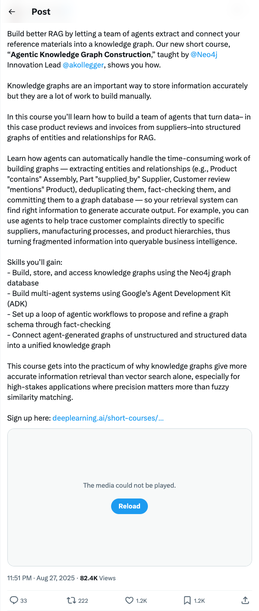
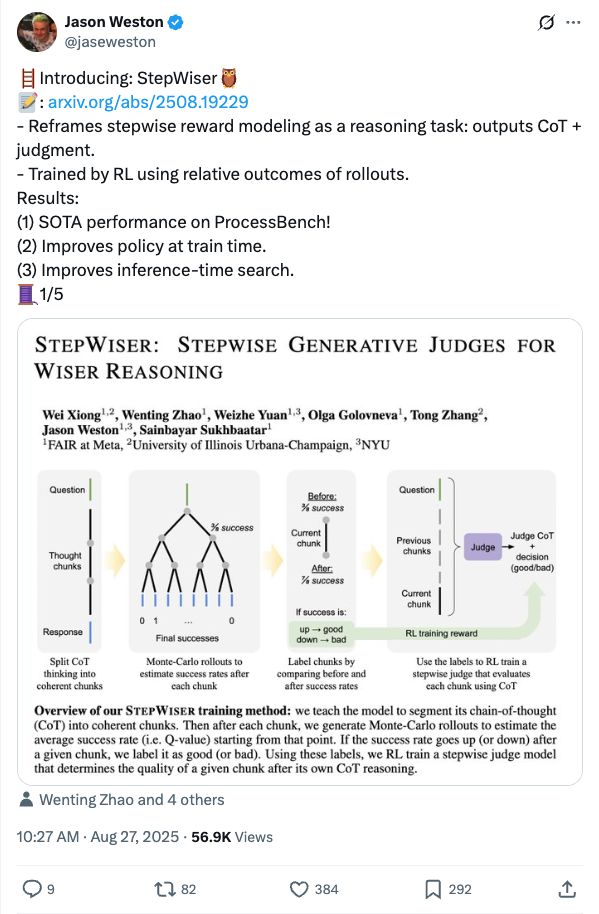
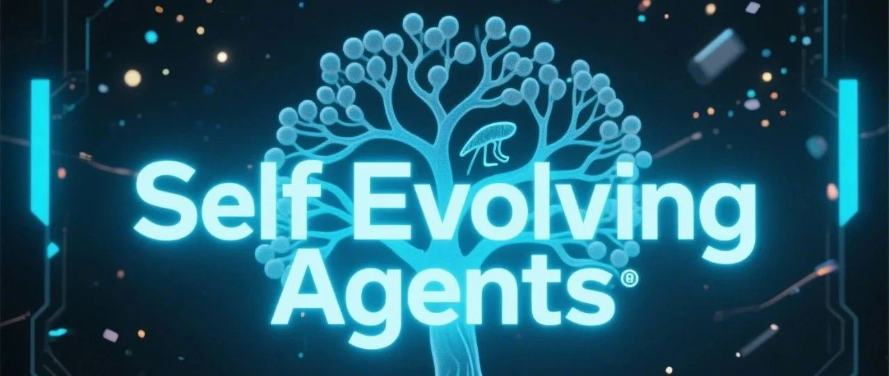
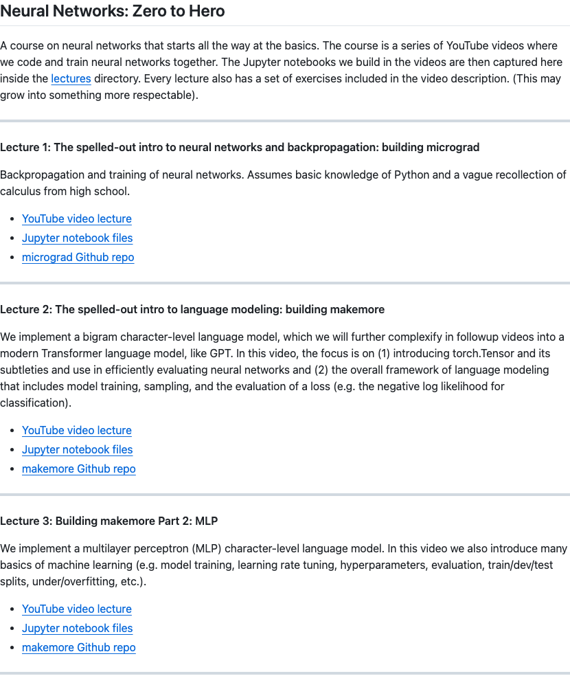

Twitter
ammar__khairi_New LLM Test-Time Compute Optimization Method to Appear at EMNLP2025
Published: 2025-08-27T18:03:47.000Z
Ammar Khairi's team announced their research on scaling test-time compute for Large Language Models (LLMs), dubbed the "LLMonade recipe," has been accepted by the EMNLP 2025 Main Conference. This method combines strategic sampling with novel selection to significantly boost LLM inference performance without requiring extra training or special reward models, aiming for more efficient resource utilization and superior results.
_KarenHao_Teen Suicide Linked to ChatGPT Prompts Reflection
Published: 2025-08-27T12:47:57.000Z

Renowned journalist Karen Hao highlights the disturbing case of teenager Adam Raine, who died by suicide after prolonged engagement with ChatGPT. She expresses profound sorrow over the incident, recalling artist Hito Steyerl's insights that such tragedies are not inevitable. The tweet prompts deep reflection on AI ethics, the impact of AI technology on user mental health, and platform responsibility.
AndrewYNg_New Course on Agentic Knowledge Graph Construction
Published: 2025-08-27T15:51:42.000Z

Andrew Ng announced a new DeepLearning.AI short course, "Agentic Knowledge Graph Construction," taught by a Neo4j expert. The course focuses on leveraging teams of AI agents to automate the building of knowledge graphs, extracting entities and relationships from unstructured data, performing deduplication, fact-checking, and committing them to a graph database. This significantly enhances the accuracy of RAG systems, transforming fragmented information into queryable business intelligence, particularly beneficial for high-stakes applications where precision is crucial.
jaseweston_Introduces StepWiser: Reframing Stepwise Reward Modeling as a Reasoning Task
Published: 2025-08-27T02:27:59.000Z

Jason Weston introduced StepWiser, a new research approach that reframes stepwise reward modeling as a reasoning task, generating Chain-of-Thought (CoT) and judgments. Trained by Reinforcement Learning using relative outcomes of rollouts, StepWiser achieves state-of-the-art performance on ProcessBench. It also demonstrates improvements in policy at train time and enhances inference-time search. This work offers a novel perspective on reward modeling and AI reasoning.
fchollet_A New Method to Distinguish Model Memorization from Reasoning
Published: 2025-08-27T20:56:33.000Z
Prominent AI researcher François Chollet proposes a simple method to distinguish whether a model's correct answer stems from memorization or genuine reasoning. He suggests that when a model provides a correct answer to a reasoning question, one can test its true understanding by subtly tweaking the question. If the modified question requires the model to reason and adapt to produce a new answer, but the model still yields the original answer, it strongly indicates that its response was based on rote memorization rather than true reasoning ability. This practical method offers a valuable approach to evaluating the deeper cognitive capabilities of AI models.
wechat
Google's "Strongest Image Model" Sweeps All! 3 Cents Per Image Stuns OpenAI, Photoshop May Cease to Exist
Published: 2025-08-27T14:01:16.000Z
Google has officially launched its top-tier image generation and editing model, Gemini 2.5 Flash Image, also known as nano-banana. This model has been hailed as the "strongest image model" after dominating LMArena blind tests with the largest historical lead. Its core capabilities include maintaining character consistency, advanced prompt-based image editing, leveraging native world knowledge, and multi-image fusion. Offering high-quality image generation and editing at an exceptionally low cost—approximately $0.039 per image—it significantly undercuts competitors like OpenAI. This breakthrough is poised to revolutionize traditional image processing software such as Adobe Photoshop, potentially rendering professional image editing roles obsolete. Furthermore, its advanced features and cost-effectiveness are expected to profoundly impact workflows in industries like advertising and film production, enabling new levels of creative control and efficiency.
Why PPO Consistently Outperforms Policy Gradient? The Answer Lies in This 'Golden Clipping' Strategy
Published: 2025-08-27T14:01:16.000Z
The Proximal Policy Optimization (PPO) algorithm has emerged as a highly effective solution in reinforcement learning, successfully overcoming the inherent instability of traditional Policy Gradient methods and the computational complexity associated with TRPO. PPO's core innovation lies in its unique "Clipping" mechanism, which judiciously limits the magnitude of policy updates, thereby guaranteeing a stable and secure learning process. Furthermore, PPO leverages advanced techniques such as Generalized Advantage Estimation (GAE) for more accurate value assessment, incorporates an entropy bonus to encourage exploration, and allows for multiple iterations of data utilization, all of which collectively boost its sample efficiency and overall robustness. This remarkable ability to strike an optimal balance among stability, ease of implementation, and sample efficiency has propelled PPO to become one of the most widely adopted and influential reinforcement learning algorithms across both academic research and industrial applications. It undeniably marks a pivotal advancement in the trajectory of policy gradient algorithms.
OmniHuman-1.5: A New Video Generation Paradigm for 'Thinking' Digital Humans
Published: 2025-08-27T12:07:04.000Z
Existing digital human models, while capable of generating fluid animations, often fall short in capturing the essence of characters due to a lack of deep understanding of emotions, intentions, and context. ByteDance's OmniHuman-1.5 framework addresses this limitation by aiming to produce physically plausible, semantically coherent, and highly expressive character animations. Its core innovations lie in two aspects: first, leveraging Multi-modal Large Language Models (MLLM) to generate structured conditional text representations, providing high-level semantic guidance that transcends simple rhythm synchronization; second, introducing a specialized Multi-modal DiT architecture with a novel Pseudo Last Frame design. This design facilitates efficient multi-modal signal fusion and mitigates cross-modal conflicts, enabling the model to accurately comprehend the joint semantics of audio, image, and text. The framework employs a dual-system simulation approach, combining a deliberative System 2 (planning via MLLM Agent) with a reactive System 1 (rendering via MMDiT network), ensuring high consistency across character, scene, and language content, thereby moving towards digital humans with 'thinking' capabilities.
Princeton, Tsinghua, and 20 Other Universities Jointly Release Survey on 'Self-Evolving' Agents
Published: 2025-08-27T10:53:02.000Z

A joint survey paper by 20 leading universities, including Princeton and Tsinghua, introduces the concept of "self-evolving agents," emphasizing the critical role of adaptability and adjustment for AI systems in dynamic environments to achieve Artificial General Intelligence (AGI). The review proposes a four-dimensional analytical framework—What, When, How, and Where to evolve—systematically dissecting the evolvable components of agents, including model parameters, context, tools, and architecture. The paper elaborates on two evolution timings: in-task immediate evolution and post-task retrospective learning, alongside three driving forces: feedback, demonstration, and population-based evolution. Self-evolving agents show broad application prospects as general digital assistants and in specialized domains like coding, finance, and healthcare. Future evaluation metrics must focus on adaptability, knowledge retention, generalization, and safety efficiency. This research signals that the next generation of AI will be "intelligent life" capable of co-growth with users, moving beyond static tools.
Breaking Bottlenecks, Enabling RAG to Reason: USTC, Zhipu AI, and Others Release Reasoning Retrieval Framework BGE-Reasoner
Published: 2025-08-27T06:24:35.000Z
A joint team from USTC, Zhipu AI, and other institutions has released BGE-Reasoner, an innovative reasoning retrieval framework designed to overcome the critical bottleneck of reasoning-intensive information retrieval in the advancement of RAG and AI Agents. This end-to-end solution significantly enhances search engine performance in complex query scenarios through a modular three-stage framework (Rewriter, Embedder, Reranker), leveraging large language models for high-quality synthetic training data, and empowering the Reranker with reinforcement learning. BGE-Reasoner has achieved a new state-of-the-art score on the authoritative BRIGHT benchmark, surpassing existing models. This breakthrough provides a novel paradigm for advancing Retrieval-Augmented Generation (RAG) in complex reasoning tasks and signals a crucial direction for future Agent Search development. The project plans to open-source its model weights and training code to further promote research and application in this field.
Claude for Chrome Arrives! Directly Usable as a Browser Extension
Published: 2025-08-27T05:47:09.000Z

Anthropic has launched Claude for Chrome, a new AI agent available as a browser extension. This extension allows users to interact with Claude in a side window, maintaining context from active browser tabs, and can perform tasks like calendar management, email replies, and information retrieval with user authorization. Currently, access is limited to a select group of Max subscribers, as Anthropic prioritizes security, particularly against "prompt injection attacks." The company has implemented various safeguards, including restricting access to specific websites, blocking sensitive content by default, and requiring user permission for high-risk operations. The article highlights that AI-powered browsers are emerging as a new competitive arena for tech giants, citing examples such as Perplexity's Comet, Google's Gemini, and Microsoft's Copilot. It suggests two main development paths: integrating AI as an extension into existing browsers or developing entirely new AI-centric browsers.
GitHub
System Prompts Leaks
Published: 2025-08-27T17:43:45Z

The GitHub repository "System Prompts Leaks" is a significant open-source project dedicated to the systematic collection and public dissemination of system message instructions employed by various publicly deployed AI chatbots. This initiative provides an invaluable and unique resource for researchers, AI ethicists, and developers who are keen to delve into the intricate internal workings, operational logic, and behavioral patterns of large language models and advanced conversational AI systems. By meticulously compiling these often-undisclosed system prompts, the project plays a pivotal role in advancing the understanding of AI transparency, facilitating the identification of inherent biases, and enabling a deeper analysis of the complex processes that govern AI response generation. Ultimately, this repository aims to significantly enhance the explainability, robustness, and safety of contemporary AI systems, thereby fostering a more transparent, responsible, and informed development ecosystem for artificial intelligence technologies across various domains.
WhisperLiveKit
Published: 2025-08-27T19:02:25Z

WhisperLiveKit is an open-source project offering real-time, fully local speech-to-text with integrated speaker identification. It leverages cutting-edge research like SimulStreaming, WhisperStreaming, and Sortformer to achieve ultra-low latency and high-accuracy speech processing. The tool includes a ready-to-use backend server and a simple frontend, supporting multiple concurrent users and optimizing resources through Voice Activity Detection. Its core advantage lies in intelligent buffering and incremental processing, effectively addressing context loss issues common with traditional Whisper models in real-time, small-batch processing. WhisperLiveKit is suitable for various applications such as meeting transcription, accessibility tools for the hearing-impaired, automated content creation for podcasts/videos, and customer service call transcription, offering easy integration and scalability with Docker support.
Neural Networks: Zero to Hero
Published: 2024-02-20T17:19:51Z

This GitHub repository serves as the official companion for the "Neural Networks: Zero to Hero" course, providing comprehensive resources through a series of YouTube video lectures and corresponding Jupyter Notebooks. The course meticulously guides learners from the absolute basics of neural networks and backpropagation, exemplified by the `micrograd` project, to the intricate development of character-level language models with `makemore`, culminating in the construction of a Generative Pre-trained Transformer (GPT) from scratch. It delves into essential concepts such as PyTorch tensor operations, efficient neural network evaluation, model training methodologies, hyperparameter tuning, and advanced techniques like Batch Normalization and manual backpropagation. This educational initiative is designed to equip individuals with a deep, hands-on understanding of modern deep learning architectures, particularly focusing on their practical application in natural language processing and large language models.
Audiblez: Generate audiobooks from e-books
Published: 2025-03-02T18:28:03Z

Audiblez is an open-source tool designed to efficiently convert e-books, specifically in EPUB format, into high-quality M4B audiobooks. It utilizes the Kokoro-82M text-to-speech model, known for its natural-sounding output and compact size, supporting a wide array of languages including English, Spanish, French, and Chinese. The tool offers both a command-line interface and a user-friendly graphical interface, catering to different user preferences. A key feature is its support for CUDA acceleration, which dramatically speeds up the conversion process; for example, a 160,000-character book can be converted in about 5 minutes on a GPU. Users can also fine-tune the audiobook experience by adjusting playback speed and selecting from a diverse range of voices. This makes Audiblez a robust and versatile solution for anyone looking to create personalized audiobooks from their digital library.
MCP Toolbox for Databases
Published: 2025-08-28T02:07:20Z

MCP Toolbox for Databases is an open-source MCP server specifically designed to streamline the development of Generative AI tools. It empowers AI agents to interact with and access database data with greater ease, speed, and security by abstracting away complexities like connection pooling and robust authentication mechanisms. This solution provides a simplified development experience, optimizes performance through best practices, and ensures enhanced data security via integrated authentication. Furthermore, it offers comprehensive end-to-end observability with built-in OpenTelemetry support, allowing for better monitoring. Developers can leverage this toolbox to create powerful AI database assistants, enabling natural language querying directly from their IDEs, automating database management tasks, and generating context-aware application code and tests. This significantly reduces manual setup, boilerplate, and error-prone schema migrations, ultimately boosting productivity and allowing developers to focus on core innovation.
Agent Reinforcement Trainer
Published: 2025-08-28T02:35:08Z

ART (Agent Reinforcement Trainer) is an innovative open-source reinforcement learning framework designed to empower Large Language Models (LLMs) to learn from experience and effectively train multi-step agents for complex real-world tasks using GRPO. A standout feature is RULER (Relative Universal LLM-Elicited Rewards), which revolutionizes reward engineering by employing an LLM-as-judge to automatically score agent trajectories. This eliminates the traditional need for hand-crafted reward functions, labeled data, or expert feedback, significantly accelerating the development cycle by 2-3x. ART operates on a robust client-server architecture, ensuring flexible deployment and training from various environments, including local GPUs or ephemeral cloud instances. It supports a wide range of vLLM/HuggingFace-compatible models and offers seamless integrations with observability platforms like W&B and Langfuse, simplifying debugging. ART's capabilities are demonstrated across diverse applications, from email research and game playing (e.g., 2048, Tic Tac Toe) to mastering complex server tools, making it a versatile solution for advanced AI agent development.
huggingface
Servant, Stalker, Predator: How An Honest, Helpful, And Harmless (3H)
Agent Unlocks Adversarial Skills
Published: 2025-08-27T01:11:59.000Z

This paper identifies and analyzes a novel vulnerability class in Model
Context Protocol (MCP) based agent systems. The attack chain describes and
demonstrates how benign, individually authorized tasks can be orchestrated to
produce harmful emergent behaviors. Through systematic analysis using the MITRE
ATLAS framework, we demonstrate how 95 agents tested with access to multiple
services-including browser automation, financial analysis, location tracking,
and code deployment-can chain legitimate operations into sophisticated attack
sequences that extend beyond the security boundaries of any individual service.
These red team exercises survey whether current MCP architectures lack
cross-domain security measures necessary to detect or prevent a large category
of compositional attacks. We present empirical evidence of specific attack
chains that achieve targeted harm through service orchestration, including data
exfiltration, financial manipulation, and infrastructure compromise. These
findings reveal that the fundamental security assumption of service isolation
fails when agents can coordinate actions across multiple domains, creating an
exponential attack surface that grows with each additional capability. This
research provides a barebones experimental framework that evaluate not whether
agents can complete MCP benchmark tasks, but what happens when they complete
them too well and optimize across multiple services in ways that violate human
expectations and safety constraints. We propose three concrete experimental
directions using the existing MCP benchmark suite.
TreePO: Bridging the Gap of Policy Optimization and Efficacy and
Inference Efficiency with Heuristic Tree-based Modeling
Published: 2025-08-24T16:52:37.000Z

Recent advancements in aligning large language models via reinforcement
learning have achieved remarkable gains in solving complex reasoning problems,
but at the cost of expensive on-policy rollouts and limited exploration of
diverse reasoning paths. In this work, we introduce TreePO, involving a
self-guided rollout algorithm that views sequence generation as a
tree-structured searching process. Composed of dynamic tree sampling policy and
fixed-length segment decoding, TreePO leverages local uncertainty to warrant
additional branches. By amortizing computation across common prefixes and
pruning low-value paths early, TreePO essentially reduces the per-update
compute burden while preserving or enhancing exploration diversity. Key
contributions include: (1) a segment-wise sampling algorithm that alleviates
the KV cache burden through contiguous segments and spawns new branches along
with an early-stop mechanism; (2) a tree-based segment-level advantage
estimation that considers both global and local proximal policy optimization.
and (3) analysis on the effectiveness of probability and quality-driven dynamic
divergence and fallback strategy. We empirically validate the performance gain
of TreePO on a set reasoning benchmarks and the efficiency saving of GPU hours
from 22\% up to 43\% of the sampling design for the trained models, meanwhile
showing up to 40\% reduction at trajectory-level and 35\% at token-level
sampling compute for the existing models. While offering a free lunch of
inference efficiency, TreePO reveals a practical path toward scaling RL-based
post-training with fewer samples and less compute. Home page locates at
https://m-a-p.ai/TreePO.
OmniHuman-1.5: Instilling an Active Mind in Avatars via Cognitive
Simulation
Published: 2025-08-26T17:15:26.000Z

Existing video avatar models can produce fluid human animations, yet they
struggle to move beyond mere physical likeness to capture a character's
authentic essence. Their motions typically synchronize with low-level cues like
audio rhythm, lacking a deeper semantic understanding of emotion, intent, or
context. To bridge this gap, we propose a framework designed to
generate character animations that are not only physically plausible but also
semantically coherent and expressive. Our model, OmniHuman-1.5, is
built upon two key technical contributions. First, we leverage Multimodal Large
Language Models to synthesize a structured textual representation of conditions
that provides high-level semantic guidance. This guidance steers our motion
generator beyond simplistic rhythmic synchronization, enabling the production
of actions that are contextually and emotionally resonant. Second, to ensure
the effective fusion of these multimodal inputs and mitigate inter-modality
conflicts, we introduce a specialized Multimodal DiT architecture with a novel
Pseudo Last Frame design. The synergy of these components allows our model to
accurately interpret the joint semantics of audio, images, and text, thereby
generating motions that are deeply coherent with the character, scene, and
linguistic content. Extensive experiments demonstrate that our model achieves
leading performance across a comprehensive set of metrics, including lip-sync
accuracy, video quality, motion naturalness and semantic consistency with
textual prompts. Furthermore, our approach shows remarkable extensibility to
complex scenarios, such as those involving multi-person and non-human subjects.
Homepage: https://omnihuman-lab.github.io/v1_5/
CineScale: Free Lunch in High-Resolution Cinematic Visual Generation
Published: 2025-08-21T17:59:57.000Z

Visual diffusion models achieve remarkable progress, yet they are typically
trained at limited resolutions due to the lack of high-resolution data and
constrained computation resources, hampering their ability to generate
high-fidelity images or videos at higher resolutions. Recent efforts have
explored tuning-free strategies to exhibit the untapped potential
higher-resolution visual generation of pre-trained models. However, these
methods are still prone to producing low-quality visual content with repetitive
patterns. The key obstacle lies in the inevitable increase in high-frequency
information when the model generates visual content exceeding its training
resolution, leading to undesirable repetitive patterns deriving from the
accumulated errors. In this work, we propose CineScale, a novel inference
paradigm to enable higher-resolution visual generation. To tackle the various
issues introduced by the two types of video generation architectures, we
propose dedicated variants tailored to each. Unlike existing baseline methods
that are confined to high-resolution T2I and T2V generation, CineScale broadens
the scope by enabling high-resolution I2V and V2V synthesis, built atop
state-of-the-art open-source video generation frameworks. Extensive experiments
validate the superiority of our paradigm in extending the capabilities of
higher-resolution visual generation for both image and video models.
Remarkably, our approach enables 8k image generation without any fine-tuning,
and achieves 4k video generation with only minimal LoRA fine-tuning. Generated
video samples are available at our website:
https://eyeline-labs.github.io/CineScale/.
Training Language Model Agents to Find Vulnerabilities with CTF-Dojo
Published: 2025-08-25T18:02:23.000Z

Large language models (LLMs) have demonstrated exceptional capabilities when
trained within executable runtime environments, notably excelling at software
engineering tasks through verified feedback loops. Yet, scalable and
generalizable execution-grounded environments remain scarce, limiting progress
in training more capable ML agents. We introduce CTF-Dojo, the first
large-scale executable runtime tailored for training LLMs with verifiable
feedback, featuring 658 fully functional Capture-The-Flag (CTF)-style
challenges containerized in Docker with guaranteed reproducibility. To enable
rapid scaling without manual intervention, we develop CTF-Forge, an automated
pipeline that transforms publicly available artifacts into ready-to-use
execution environments in minutes, eliminating weeks of expert configuration
traditionally required. We trained LLM-based agents on just 486 high-quality,
execution-verified trajectories from CTF-Dojo, achieving up to 11.6% absolute
gains over strong baselines across three competitive benchmarks: InterCode-CTF,
NYU CTF Bench, and Cybench. Our best-performing 32B model reaches 31.9% Pass@1,
establishing a new open-weight state-of-the-art that rivals frontier models
like DeepSeek-V3-0324 and Gemini-2.5-Flash. By framing CTF-style tasks as a
benchmark for executable-agent learning, CTF-Dojo demonstrates that
execution-grounded training signals are not only effective but pivotal in
advancing high-performance ML agents without dependence on costly proprietary
systems.
UltraMemV2: Memory Networks Scaling to 120B Parameters with Superior
Long-Context Learning
Published: 2025-08-26T07:33:11.000Z

While Mixture of Experts (MoE) models achieve remarkable efficiency by
activating only subsets of parameters, they suffer from high memory access
costs during inference. Memory-layer architectures offer an appealing
alternative with very few memory access, but previous attempts like UltraMem
have only matched the performance of 2-expert MoE models, falling significantly
short of state-of-the-art 8-expert configurations. We present UltraMemV2, a
redesigned memory-layer architecture that closes this performance gap. Our
approach introduces five key improvements: integrating memory layers into every
transformer block, simplifying value expansion with single linear projections,
adopting FFN-based value processing from PEER, implementing principled
parameter initialization, and rebalancing memory-to-FFN computation ratios.
Through extensive evaluation, we demonstrate that UltraMemV2 achieves
performance parity with 8-expert MoE models under same computation and
parameters but significantly low memory access. Notably, UltraMemV2 shows
superior performance on memory-intensive tasks, with improvements of +1.6
points on long-context memorization, +6.2 points on multi-round memorization,
and +7.9 points on in-context learning. We validate our approach at scale with
models up to 2.5B activated parameters from 120B total parameters, and
establish that activation density has greater impact on performance than total
sparse parameter count. Our work brings memory-layer architectures to
performance parity with state-of-the-art MoE models, presenting a compelling
alternative for efficient sparse computation.